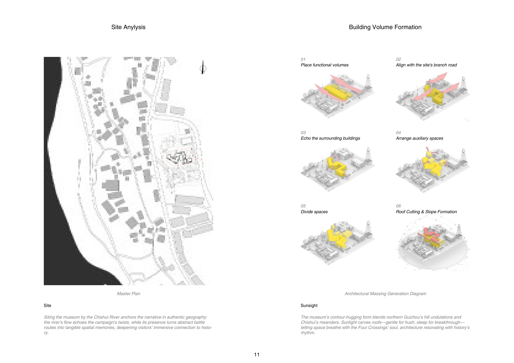
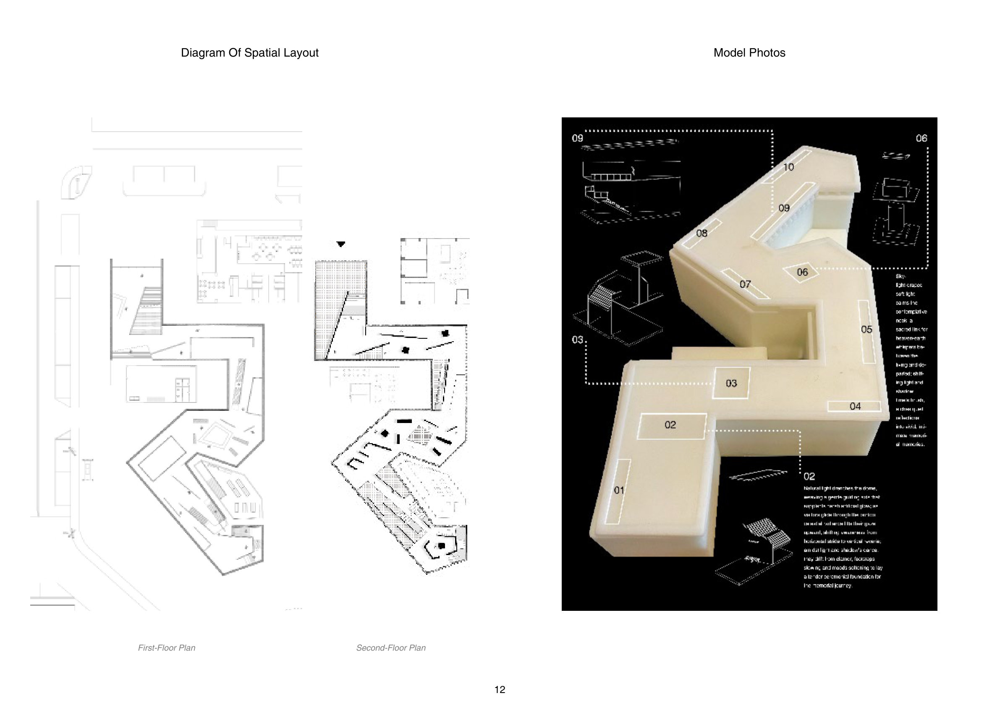
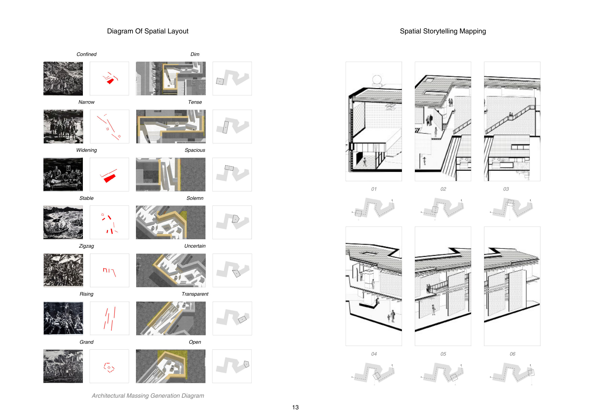

Anchor human stories and collective memory, turning history into tangible emotion.
The banks of the Chishui River near Zunyi once breathed with quiet warmth — a beloved haven where families and communities gathered. Modern development has disrupted this gentle riverine rhythm, and the once-cozy riverside has lost its tender sense of connection.
This memorial hall is never a flamboyant structure, but a silent echo: a profound reflection on war, a vessel for memories aged by time, a narrative born from the earth. Its restraint is not retreat but reverence. The building dissolves into the shoreline, letting historical memory seep into the fabric of the place — weaving a landscape where yesterday and today coexist as one.


